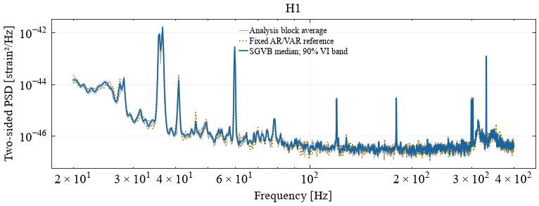
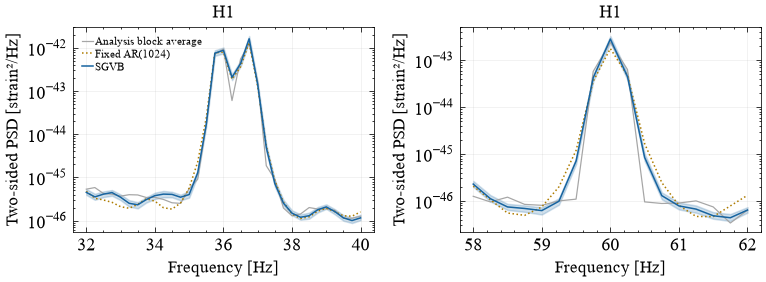
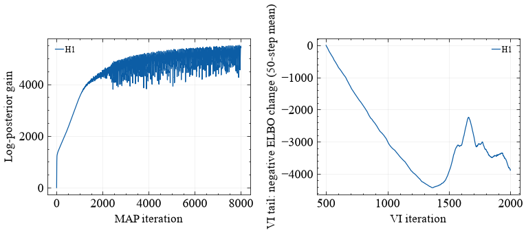

LVK example#
Use the 128-second off-source H1 strain excerpt in Jianan’s AR-SGVB example (about 4 MB, ending two seconds before GW150914). Following its AR-prewhitening idea, fit one AR(1024) baseline to capture the broad shape and lines; do not search for the best order. SGVB handles residual whitening and reconstruction internally, so the reference is applied exactly once. A 1,024-harmonic residual basis can correct narrow line widths; the AR baseline need not be optimal.
The first 32 seconds train the AR model, the next 64 seconds train SGVB, and
the final 32 seconds are held out. Downsample to 1024 Hz with anti-aliasing,
high-pass at 8 Hz, and analyse 20–400 Hz in four-second normalized Hann blocks.
The target is this processed, window-resolved strain PSD. Set
DETECTORS=("H1", "L1") for two cached downloads and a joint spectral-matrix fit.
The cached excerpt contains timestamps/strain, but no data-quality masks. This is a noise-estimation demonstration rather than a full detector-quality or astrophysical analysis. The GWOSC event record identifies the event time and original public strain products.
Setup#
# Colab installs the package; local runs use the project environment.
import subprocess
import sys
try:
import google.colab
except ImportError:
print("Using the local SGVB environment. See the repository's uv setup instructions.")
else:
subprocess.check_call([
sys.executable, "-m", "pip", "install", "-q",
"jax[cpu]==0.6.2", "numpyro==0.19.0",
"sgvb_psd[examples] @ git+https://github.com/nz-gravity/sgvb_psd.git@main",
])
Using the local SGVB environment. See the repository's uv setup instructions.
import warnings
warnings.filterwarnings("ignore", message="IProgress not found.*")
from pathlib import Path
from time import perf_counter
import numpy as np
import matplotlib.pyplot as plt
from scipy import signal
from sgvb_psd.psd_estimator import PSDEstimator
from sgvb_psd.ar_reference import fit_ar_reference
import jax
%matplotlib inline
plt.rcParams.update({"font.family": "sans-serif", "font.size": 11,
"axes.labelsize": 11, "axes.titlesize": 12, "legend.fontsize": 8,
"figure.dpi": 110, "text.usetex": False})
print("JAX", jax.__version__, "devices:", jax.devices())
# Fixed budgets: no order or learning-rate search on the validation segment.
BUDGET = dict(N_theta=1024, degree_fluctuate=1024, ntrain_map=8000, n_elbo_maximisation_steps=2000,
optimize_mean=True, elbo_samples=4, vi_learning_rate=.005,
N_samples=128, seed=7)
21:31:15|SGVB-PSD|INFO| No GPU detected. Running on CPU.
JAX 0.6.2 devices: [CpuDevice(id=0)]
Separate training, analysis and validation blocks#
from urllib.request import urlopen
from hashlib import sha256
import shutil
DETECTORS = ("H1",)
SOURCE_REVISION = "ee515546a389e935b01d1bb1fac26240a52563b0"
CHECKSUMS = {
"H1": "634ddb374cb1cfab487a6364007c110540d37e1fea4676800a51a7fdf874c106",
"L1": "1f00a2e68fa135affbea8835ab3e116997c8fb3e7b844728432b8869ebb9cbe5",
}
CACHE = Path("data"); CACHE.mkdir(exist_ok=True)
channels, epochs = [], []
for detector in DETECTORS:
filename = f"{detector}_1126259332400_1126259460400.npz"
path = CACHE/filename
if not path.exists():
url = f"https://raw.githubusercontent.com/jianan-joseph-liu/cleared_unisgvb/{SOURCE_REVISION}/data_cache/{filename}"
temporary = path.with_suffix(".part")
with urlopen(url, timeout=60) as response, temporary.open("wb") as destination:
shutil.copyfileobj(response, destination)
temporary.replace(path)
assert sha256(path.read_bytes()).hexdigest() == CHECKSUMS[detector], "Cached strain differs from the fixed input"
with np.load(path, allow_pickle=False) as saved:
channels.append(np.asarray(saved["values"], dtype=float))
epochs.append(float(saved["epoch"]))
assert np.isclose(float(saved["dt"]), 1/4096, rtol=0, atol=1e-12)
assert np.allclose(epochs, epochs[0], rtol=0, atol=1e-6)
raw = np.column_stack(channels)
assert raw.shape == (524288, len(DETECTORS)) and np.isfinite(raw).all()
assert abs(epochs[0]+128-(1126259462.4-2)) < .01
fs = 1024.
BLOCK_SAMPLES = 4096
reduced = signal.resample_poly(raw, up=1, down=4, axis=0)
highpass = signal.butter(4, 8., btype="highpass", fs=fs, output="sos")
reduced = signal.sosfiltfilt(highpass, reduced, axis=0)
def taper_blocks(values, block_samples):
"""Center each block and apply a unit-mean-square periodic Hann window."""
blocks = values.reshape(-1, block_samples, values.shape[1])
window = signal.windows.hann(block_samples, sym=False)
window /= np.sqrt(np.mean(window**2))
nbw = block_samples*np.sum(window**2)/np.sum(window)**2
result = ((blocks-blocks.mean(axis=1, keepdims=True))*window[None, :, None])
return result.reshape(values.shape), nbw
training, nbw = taper_blocks(reduced[:32*1024], BLOCK_SAMPLES)
data, _ = taper_blocks(reduced[32*1024:96*1024], BLOCK_SAMPLES)
heldout, _ = taper_blocks(reduced[96*1024:], BLOCK_SAMPLES)
print("Training / analysis / held-out samples:", training.shape, data.shape, heldout.shape)
Training / analysis / held-out samples: (32768, 1) (65536, 1) (32768, 1)
A fast initial AR fit#
Fixed-order Yule–Walker/Levinson–Durbin fitting follows the baseline idea in Jianan’s example. The reference is a full matrix with a diagonal entry per detector; SGVB retains network cross-spectra. The input convention here is two-sided and the windows have unit energy, so no manual whitening, recolouring, window-energy division or doubling is applied.
AR_ORDER = 1024 # Fixed before fitting; increase deliberately for another analysis.
start = perf_counter()
reference = fit_ar_reference(training, fs, order=AR_ORDER)
ar_seconds = perf_counter()-start
print(f"AR({reference.order}) baseline: {ar_seconds:.3f} s for {reference.n_channels} channel(s); no order search")
AR(1024) baseline: 0.005 s for 1 channel(s); no order search
Fit the residual spectral matrix#
from sgvb_psd.inference import CoarseGrainConfig
# Native bins are affordable here. The optional pilot is frozen before fitting.
USE_COARSE_GRAINING = False
coarse = (CoarseGrainConfig(max_bin_width=8, pilot_window=3, tolerance=.1)
if USE_COARSE_GRAINING else None)
start = perf_counter()
estimator = PSDEstimator(data, fs=fs, reference_psd=reference,
parallel_rows=True, coarse_grain=coarse, nchunks=len(data)//BLOCK_SAMPLES, Nbw=nbw,
fmin_for_analysis=20., fmax_for_analysis=400., **BUDGET)
_ = estimator.run(lr=.001)
fit_seconds = perf_counter()-start
assert np.isfinite(estimator.pointwise_ci).all()
print(f"{len(data)} samples × {data.shape[1]} channels; {estimator.nchunks} blocks; fit + compilation + draws {fit_seconds:.2f} s")
print("Independent vmapped Cholesky-row dimensions:", estimator.inference_runner.row_dimensions)
print("Native / likelihood frequencies:", len(estimator.freq), len(estimator.model.data.likelihood_freq))
21:31:15|SGVB-PSD|INFO| Dividing data (65536, 1) into (16, 4096, 1) chunks
21:31:15|SGVB-PSD|INFO| Reducing the number of frequencies to be analyzed from 2048 to 400.0...
21:31:15|SGVB-PSD|INFO| Final PSD will be of shape: 1520 x 1 x 1
21:31:15|SGVB-PSD|WARNING| Input data not standardised!
21:31:15|SGVB-PSD|INFO| Using provided learning rate: 0.001
21:31:15|SGVB-PSD|INFO| Training model
21:31:19|SGVB-PSD|INFO| Model trained in 3.24s
21:31:19|SGVB-PSD|INFO| Computing posterior PSDs
65536 samples × 1 channels; 16 blocks; fit + compilation + draws 7.48 s
Independent vmapped Cholesky-row dimensions: (2051,)
Native / likelihood frequencies: 1520 1520
Spectra and held-out checks#
Bands are 90% variational intervals conditional on the fixed reference. Coherence curves are formed after the same nine-bin spectral-matrix smoothing (2.25 Hz), including each posterior draw, so their frequency resolutions match.
labels = list(DETECTORS)
empirical, validation, baseline = show_spectra(estimator, data, heldout, labels, reference)
show_coherence(estimator, empirical, validation, baseline, labels)

# Check that the fast initial baseline retains narrow lines, rather than
# judging it only by a broad log-frequency view. Zooms are fixed in advance.
fig, axes = plt.subplots(1, 2, figsize=(7.2, 2.8))
for ax, bounds in zip(axes, [(32., 40.), (58., 62.)]):
keep = (estimator.freq >= bounds[0]) & (estimator.freq <= bounds[1])
f = estimator.freq[keep]
q = estimator.pointwise_ci[:, keep, 0, 0].real
ax.semilogy(f, empirical[keep, 0, 0].real, color=".65", lw=.8, label="Analysis block average")
ax.semilogy(f, baseline[keep, 0, 0].real, ":", color=COLORS["reference"], label=f"Fixed AR({AR_ORDER})")
ax.fill_between(f, q[0], q[2], color=COLORS["fit"], alpha=.2)
ax.semilogy(f, q[1], color=COLORS["fit"], label="SGVB")
ax.set(title=DETECTORS[0], xlabel="Frequency [Hz]", ylabel="Two-sided PSD [strain²/Hz]")
ax.grid(alpha=.2)
axes[0].legend(fontsize=7); fig.tight_layout(); plt.show()

Predictive agreement and optimizer traces#
check_fit(estimator, validation, baseline, labels)
Held-out plug-in Whittle score: SGVB − reference = -0.032 nats/vector (lower is better)
This is predictive agreement on one segment, not a coverage/calibration test.
H1: fitted/held-out integrated band power = 1.101

What this fit demonstrates#
The AR/VAR model is a cheap fixed initial reference. SGVB learns a smooth
residual spectral matrix and reconstructs the physical spectrum. AR order is
fixed in advance; no order search or TensorFlow installation is needed.
The independent modified-Cholesky rows are still fitted together with JAX vmap.
The Hann windows have unit mean-square, so no extra window-energy correction
or factor of two is applied to the returned two-sided PSD. The target is the
window-resolved spectrum of the processed data. Nbw=1.5 is an approximate
Hann bandwidth correction for the Whittle likelihood, not an exact model of
inter-frequency dependence.
The shaded bands are 90% variational intervals conditional on the fitted reference. They exclude uncertainty in AR coefficients and do not establish calibrated coverage. Trainable variational means and four ELBO particles reduce dependence on the final MAP iterate; inspect the displayed optimization traces instead of treating the finite budget as a convergence certificate. The VI panel shows the tail after iteration 500 so the large initial transient does not hide late optimization behaviour. Held-out scores use the posterior mean spectral matrix as a plug-in prediction; the held-out blocks are excluded from AR and SGVB parameter fitting. This single split is an illustrative diagnostic, not a blinded model-selection study.
The larger residual basis uses a smaller VI learning rate (0.005) and 8,000 MAP steps. The native frequency grid is the default; toggle the explicit coarse-graining option for a separate approximation/cost comparison.